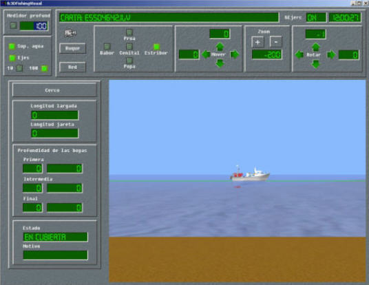
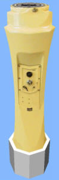

Puesto de Alumno
La configuración y el número de puestos de alumno del Simulador, varían en función de las necesidades y del uso al que vaya destinado el mismo. Estos puestos se pueden diseñar de manera que simulen, mediante miméticos hardware, un puente de gobierno de un buque (mercante, petrolero, militar, pesquero…), con todos los elementos que generalmente lleva, según el tipo de buque, o pueden incorporar simplemente una interface software, con presentación en pantallas, que emule los mandos y controles del buque. Para ello se ofrece una amplia gama de elementos hardware y software de cuya combinación se obtiene la configuración definitiva de cada puesto.

El simulador ofrece distintas versiones de consolas hardware que permiten familiarizar al alumno, con un mayor realismo, con los mandos y controles de los buques.
|
Versión 1: Consola de Gobierno y Consola de Propulsión |
|


|
Esta versión incluye:
Estas dos consolas proporcionan al alumno todos los mandos necesarios para gobernar el buque y controlar la velocidad. |
|
Versión 2: Consola de Gobierno y Consola de Propulsión y Pesca |
|

|
Esta versión incluye:
Estas dos consolas proporcionan al alumno todos los mandos necesarios para gobernar el buque y controlar la velocidad y las artes de pesca. |
|
Versión 3: Consola de Propulsión y Gobierno |
|

|
Esta versión incluye:
Esta versión incorpora en una única consola todos los mandos, indicadores y controles necesarios para gobernar el buque, controlar la velocidad y ejecutar maniobras. La consola contiene paneles hardware y paneles software, estos últimos accesibles mediante pantallas táctiles. |
|
Versión 4: Consola de Propulsión y Gobierno integrada |
|

|
Esta versión es similar a la anterior, pero integra en el mismo mueble del puente una consola Radar ARPA y una Consola de Navegación. |
|
Versión 5: Consola de Sobremesa |
|

|
Esta versión incluye:
|
Cualquiera de estas versiones de hardware se puede incorporar en el puesto de alumno.
Asimismo, los mandos, indicadores y controles del buque también se simulan mediante software permitiendo el uso del simulador a través de un MMI de fácil acceso, la Conning Display.
|
Conning Display |
|

|
Para el control de la navegación y pesca, la Conning Display incluye:
Los mandos y controles de la conning display son compatibles con los de cualquiera de las versiones de consola hardware. |
Para el control de las artes de pesca, el simulador incorpora los sensores habituales, la sonda, la sonda de red y el sonar. Estos sensores pueden ser equipos reales conectados al simulador o equipos simulados por software accesibles desde el menú de la conning display.
Sonda |
|

|
Este equipo, real o simulado, proporciona al alumno la información y control de la sonda del casco de un buque de pesca. |
Sonda de Red |
|

|
Este equipo, real o simulado, proporciona al alumno la información y control de la sonda de la red de un buque de pesca. |
Sonar |
|

|
Este equipo, real o simulado, proporciona al alumno la información y control del sonar de un buque de pesca. |
El simulador permite la instalación de uno o varios de estos equipos, tanto reales como simulados.
Para visualizar el escenario en el que el buque desarrolla todas las maniobras, el simulador puede incorporar un sistema visual tridimensional que ofrece al alumno la vista del entorno desde el puente del buque que maneja. Asimismo para observar con detalle la evolución de las artes de pesca hay disponible otro sistema visual submarino. Ambos visuales son independientes y compatibles.
Sistema Visual
El Sistema Visual es el encargado de presentar una imagen en perspectiva y geométricamente correcta del mar, tierra, cielo y todos los objetos que se encuentran dentro del campo de visión, en función de su distancia al origen de la imagen y a las condiciones ambientales.

Este sistema puede instalarse en un sólo canal ofreciendo una imagen de amplitud limitada (30º-50º) o en varios canales. Cuantos más canales se instalen mayor será la amplitud del visual pudiendo alcanzarse hasta los 360º.
Vista Submarina
La vista submarina es una pantalla gráfica en la que se muestra, el mar, el fondo, la costa, el buque propio, el cardumen, los obstáculos y los artes de pesca, permitiendo al operador hacer un seguimiento visual de la maniobra de pesca.
Para facilitar las labores de navegación, el simulador puede incorporar una serie de elementos adicionales, estos elementos simulan de forma realista los indicadores y equipos que se instalan en un buque moderno y permiten que el alumno se habitúe a su uso.
Panel de Indicadores

Este panel está integrado por los siguientes módulos:
- Anemómetro
- Timón y Velocidad de Caída
- Reloj
- Corredera
Alidada
Este instrumento es un Repetidor de Giróscopo de escala única con alidada incorporada que permite la medición de marcaciones o demoras sobre el visual.
Mesa de Cartas

Esta mesa permite consultar y archivar las cartas náuticas en papel y puede servir de base para la colocación de otros equipos del simulador.
Panel de Equipos de Navegación (incluye GPS y Radiogoniómetro)

Este panel está integrado por los siguientes módulos:
- GPS
- Radiogoniómetro
- Reloj
- Sonda
- Corredera
- Control de Iluminación
Consola Radar ARPA

Este equipo, real o simulado, proporciona al alumno la información y control de un radar arpa real.
Consola de Navegación (ECDIS)

Esta consola permite al alumno el manejo de cartas náuticas electrónicas.
Radioteléfonos

Los radioteléfonos permiten para la simulación de las comunicaciones radio.
Manipulador Scott
El manipulador scott es un pulsador para la transmisión de mensajes Scott.
Sistema de Sonorización
El Sistema de Sonorización es el encargado de la reproducción direccional o ambiental de los sonidos asociados a la actividad en el ejercicio. Reproduce sonidos asociados a los buques y a las condiciones meteorológicas.
Comunicaciones Interiores
Estas comunicaciones son útiles cuando la configuración del puente principal consta de varios puestos específicos ocupados por distintos operadores (Ej. operador de radar, operador de navegación, operador de comunicaciones...) que requieran un sistema de comunicaciones internas entre ellos.
Para dar mayor realismo al puesto de alumno, todo el equipamiento de los Puentes puede ir instalado en el interior de una estructura que reproduce los mamparos del puente de un buque, a través de cuyas ventanas se puede observar la escena exterior generada por el Sistema Visual, aumentando así la sensación subjetiva de encontrarse a bordo de un buque.